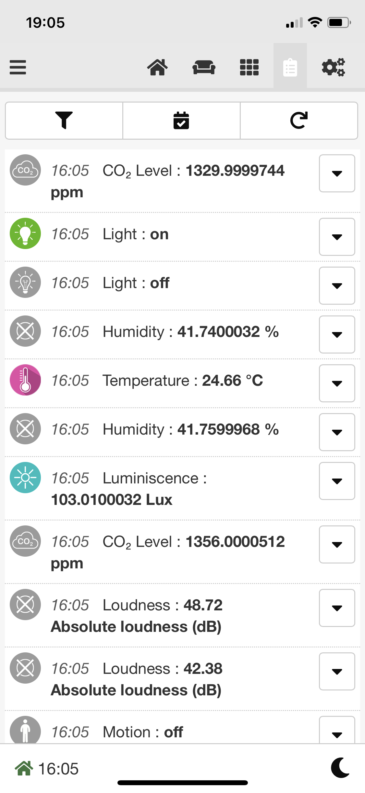
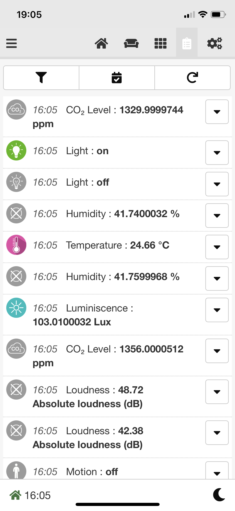

Product description
Models: ZMEEWB7-ZW-ZB and ZMEEWB7-ZW-ZB-KNX
Z-Wave.Me Multi-Protocol Controller is a modular programmable controller for automation of apartments, houses and offices. The controller can work with wired and wireless sensors and actuators. Support for the Z-Wave™ and Zigbee wireless home automation protocols is provided by a special expansion board and Z-Way software by the Z-Wave.Me. The controller has passed Z-Wave certification, which guarantees compatibility with all certified Z-Wave devices.
The main advantages of the controller:
- open HTTP/JS/C API for interacting with devices
- integration with iRidi visualization systems
- mobile apps for iOS, Android
- integration with other smart home systems, like HomeAssistant, OpenHAB, NodeRed, etc
- voice assistants: Google Assistant, Amazon's Alexa, Apple's Siri
- scripts allow you to implement flexible house management rules, create schedules, run scenarios
- full information about the capabilities of devices, about routes in the network, convenient diagnostic tools for the Z-Wave network
- secure remote access for management from anywhere in the world without using a static IP
Z-Wave.Me Multi-Protocol controller contains the 7th generation Z-Wave chip, which provides the following modern features:
- direct line of sight transmission distance of 1.6 km in Z-Wave Long Range mode
- Smart Start for trouble-free deployment of a big installation
- high data transfer rate of 100 kb/sec allows you to transfer data faster, it saves battery power
- the Z-Wave Plus™ v2 certification standard guarantees compatibility of devices from different manufacturers
- mandatory for all devices, S2 encryption protects against listening to the radio
Z-Wave.Me Multi-Protocol Controller also contains an EFR32MG21 chip, which provides communication with Zigbee and Thread.
What is Z-Wave™ and Long Range?
The Z-Wave protocol is an open, interoperable, sub-GHz wireless communications technology designed specifically for control, monitoring and status reading applications in residential and light commercial environments. Z-Wave has two operating modes Z-Wave MESH which is a very reliable sub-GHz MESH and Long Range (US only) which operates in a STAR topology offering over a mile range.
This product can be operated in any Z-Wave network with other Z-Wave certified devices from other manufacturers.
Note: To add in Z-Wave Long Range mode, you can only use Smart Start.
KNX, Z-Wave, Zigbee
The controller supports simultaneous operation in wireless Z-Wave and Zigbee networks and wired KNX network. This allows you to combine different automation technologies and benefit from a large number of different devices available for your smart home project.
KNX is designed for installation in large houses due to the reliability of the wired connection.
Z-Wave allows retrofit installations as well as extending KNX installations with high-quality and functional devices.
Zigbee opens the door to a broad range of inexpensive devices.
Installation Guidelines
- Connect the ethernet cable to the connector Ethernet 1
- Connect the 9–48V power supply to the terminals GND and V+
- Turn on the switch on the lid
- Wait for the controller to load, the indicator will flash green
- Go to https://find.z-wave.me to find out the IP address of the controller in your local network
- Also, you can view the IP address of the controller on the router
- In local network go to the controller address http://IP:8083
- When you first log in, set the administrator password and email
- It is recommended to change the SSH access credentials
- By default login: root, password: wirenboard. To change it connect via SSH, enter the passwd command and enter the new password twice
Wi-Fi Access Point
You can connect to the controller via Wi-Fi. Use the following access details:
- SSID: Z-Wave.Me-XXXXXXXX
- Password: Z-Wave.Me
Attention! For security reasons, change the wi-fi password!
Operating The Device
SmartHome UI
SmartHome UI is the main web interface for working with Z-Wave devices. SmartHome UI is used to manage devices and configure home automation scenarios.
Expert UI
Expert UI is designed for advanced setup of Z-Wave devices. Allows you to get complete information about the Z-Wave network, to diagnose and optimize.
WirenBoard UI
WirenBoard UI is used to work with wired peripherals, manage system settings and configure hardware inputs/outputs.
Z-Wave.Me Mobile App
 

| Download the Z-Wave.Me mobile app | |
|---|---|
| Z-Wave.Me mobile app for iOS | |

|
Z-Wave.Me mobile app for Android |
Connecting devices
Connecting a Modbus device
Configuration of Modbus devices is performed in the WirenBoard UI on page Settings → Configs → Serial Device Driver Configuration.
To connect a Modbus device to the controller using Modbus RTU or Modbus TCP, a template is required. Many Modbus devices already has a template. Check the list of existing templates.
Creating a template
There are two ways to tell the wb-mqtt-serial driver, which works with Modbus devices in the controller:
- Add registers of your device directly in the controller web interface. This method is convenient for a quick test or if you need to connect such a device only once.
- Create a template that describes device registers, their type and other parameters. This method is convenient for scaling: you simply copy the template to another controller and the device appears in the templates list.
Manually adding register in the UI
To add registers of your device directly in the controller web interface, select the Custom Modbus device template and add channels as show on the picture below. Set the type for each channel, map it to a register and define the mapping formula. You can add more parameters by pressing the Parameter button. Read below about creating templates to understand better the meaning of each value.
Creating a template
Here we'll look at creating a simple template. A simplified device template looks like this:
{
"device_type": "my-relay", // device type - unique identifier
"title": "My Relay", // display title
"group": "g-relay", // group in which the template will be displayed, see below
"device": {
"name": "MY-RELAY", // device name, used in MQTT and in device ID in Z-Way
"id": "my-relay",
"groups": [ ], // groups of parameters and channels
"channels": [ ], // channels, available in scripts and on the Devices tab
"parameters": [ ], // parameters, can be changed in the device settings
"translations": { } // translations
}
}
group — Group of devices in the drop-down list in the serial port settings in the controller web interface. If not specified, the device will be displayed at the bottom of the list.
- g-adapter - protocol adapters
- g-climate-sensor - climate sensors
- g-level - level sensors
- g-dimmer - dimmers
- g-air-conditioning - air conditioners
- g-climate-control - ventilation and climate controllers
- g-refrigeration - refrigeration controllers
- g-io - input/output modules
- g-relay - relay modules
- g-curtain - motors for curtains / electric curtain rods
- g-control-panel - control panels
- g-water-meter - water meters
- g-heat-meter - heat meters
- g-power-meter - electricity meters
- g-thermostat - thermostats
- g-motor-control - motor control (frequency converters)
- g-custom - other devices
Let's say we have a single-channel Modbus relay with a register table shown below.
| Address | Type | Title | Purpose |
|---|---|---|---|
| 0 | Discrete Input | Input 1 | Device input status |
| 1 | Input Register | Input 1 Counter | Input counter value |
| 3 | Coil | Relay 1 | Output status and control |
| 10 | Holding | Input Mode | Selecting the mode of interaction between inputs and outputs |
In this case, the template will look like this:
{
"device_type": "my-relay",
"title": "My Relay",
"group": "g-relay",
"device": {
"name": "MY-RELAY",
"id": "my-relay",
"groups": [
{
"title": "Channels",
"id": "channels",
"order": 0
},
{
"title": "Settings",
"id": "settings",
"order": 1
}
],
"channels": [
{
"name": "Input 1",
"reg_type": "discrete",
"address": 1,
"type": "switch",
"group": "channels"
},
{
"name": "Input 1 Counter",
"reg_type": "input",
"address": 2,
"type": "value",
"group": "channels"
},
{
"name": "Relay 1",
"reg_type": "coil",
"address": 3,
"type": "switch",
"group": "channels"
}
],
"parameters": [
{
"id": "input1",
"title": "Input Mode",
"reg_type": "input",
"address": 10,
"format": "s8",
"enum": [
1,
2
],
"enum_titles": [
"Switch Relay"
"Not used"
],
"default": 1
}
],
"translations": {
"de": {
"Channels": "Kanäle",
"Settings": "Einstellungen",
"Input 1": "Eingang 1",
"Input 1 Counter": "Zähler von Eingang 1",
"Relay 1": "Relais 1",
"Input Mode": "Eingabemodus"
}
}
}
}
Loading template to controller
When the template is ready, it needs to be loaded onto the controller:
- Save the template to a file, for example,
my-relay.jsonand upload it to the controller in the folder/etc/wb-mqtt-serial.conf.d/templatesusing SSH copy. -
Check the template for syntax errors with the command:
in the example in the template ''my-best-template.json'' on line 12, character 5 is expected# wb-mqtt-serial -g <3>ERROR: [serial config] Failed to parse /etc/wb-mqtt-serial.conf.d/templates/my-relay.json Failed to parse JSON /etc/wb-mqtt-serial.conf.d/templates/my-best-template.json:* Line 12, Column 5 Missing ',' or '}' in object declaration,or}, but something else is found. - If everything is fine with the template, then go to the driver settings on the page Settings → Configs → Serial Device Driver Configuration and select your template.
Query optimization by the driver
The Modbus RTU standard provides a mandatory silence interval of 3.5 characters between data frames (a character means a package consisting of a start bit, data bits, parity bit and stop bits).
To speed up the polling of devices, the driver respects this interval only before the first request to the next device in the polling cycle (the ''frame_timeout_ms' parameter in device templates).
Therefore, in order to comply with the requirements of the Modbus-RTU protocol, it is necessary to set the guard_interval_us parameter. This parameter specifies the delay before each request is written to the port.
The required value is calculated using the formula: guard_interval_us = (3.5*11*106)/(rate in bit/s).
For example, for a speed of 9600 bps guard_interval_us = (3.5*11*106)/9600 = 4000 µs. If there are problems connecting a device, this value can be increased (for example, up to 100 000 μs).
Possible problems with devices
With some devices, a fairly common situation is when you have made a template, the communication works, but errors appear in the logs, and the device channels in the controller’s web interface are colored red.
The main reason for this is that the device processes requests from our driver too slowly. To begin with, we recommend connecting such devices to a separate bus so that they do not slow down the operation of normal devices, and then use the recommendations below.
To fix it, try increasing the guard_interval_us parameter up to thousands of units, for example, 5000. If the operation stabilizes, slowly reduce this value until errors appear again. The previous value when everything worked well will be your value in the template.
There is also a parameter response_timeout_ms, the maximum device response time in milliseconds, by default 500 ms. You can also experiment carefully with it.
Do not unnecessarily set huge values in these parameters, this will slow down the polling of devices on the port where the problematic device is connected.
Both parameters are written to the device section of the template:
"device": {
"name": "BAC-6000ELNW",
"id": "bac-6000elnw",
"response_timeout_ms": 100,
"guard_interval_us": 5000,
...
}
Different registers for reading status and control
Sometimes devices allows reading from one register and writing to another one. To ensure that the driver works with such devices without errors, there is the write_address parameter.
Let's say our device has a write-only register:
| Address | Type | Title | Purpose |
|---|---|---|---|
| 20 | Coil | Relay 1 Switch | Output control, write only |
In this case, the channel should be described as follows:
{
"name": "Relay 1 Switch",
"write_address": "20",
"reg_type": "coil",
"type": "pushbutton",
"format": "u16",
"group": "channels",
"on_value": 1 // defines what to write to the register when pressed
}
Let's say that in our device a command is written to one register and read from another. This method can only be used if both registers are of the same type. If the types are different, create two different channels: for reading and for writing.
| Address | Type | Title | Purpose |
|---|---|---|---|
| 20 | Coil | Relay 1 Switch | Output control, write-only |
| 21 | Coil | Relay 1 State | Output status, read-only |
In this case, the channel should be described as follows: we will have one parameter in the controller, but when exchanging data, writing will be done from one register, and reading from another:
{
"name": "Relay 1",
"write_address": "20", // address where we write commands
"address": "21", // address at which we read the status
"reg_type": "coil",
"type": "switch",
"format": "u16",
"group": "channels"
}
Arbitrary values in registers with binary logic
Sometimes it happens that, according to the meaning of the register, it should be represented in the web interface by an ON/OFF switch, but its valid values are not 1/0. In this case, you define a regular channel with type switch and specify the values on_value and off_value, for example:
{
"name": "Status",
"reg_type": "holding",
"address": "0",
"type": "switch",
"format": "u16",
"on_value": "0x00a5", // ON
"off_value": "0x005a" // OFF
}
Now the driver will automatically convert the specified values to the switch position when reading, and write the specified values when the switch position changes.
Technical Details
| General | |
|---|---|
| CPU | ARM Cortex A7 4 core 1.2 GHz |
| RAM | DDR3 RAM 2 GB |
| FLASH | 64 GB TLC BiCS5 |
| Dimensions | |
| Mounting | DIN rail |
| Width, DIN-units | 6 |
| Sizes (H x W х D) | 106 x 90 x 58 mm |
| Weight (with box) | 235 g |
| Operating conditions | |
| Air temperature | 0 ... +75 °C |
| Humidity | Up to 92%, without condensation of moisture |
| Warranty period | 2 years |
| Service life | 5 years |
| Interfaces | |
| KNX | 1 — only for ZMEEWB7-ZW-ZB-KNX |
| RS-485 | 2 |
| CAN | 1 — multiplexed with one of RS-485 |
| microSD slot up to 25 MB/s | 1 |
| Wx ports: 1-Wire interface/digital input | 2 |
| Ax ports: digital/analog input and output "open collector" | 3 |
| Port D1: digital input/output "open collector" | 1 |
| Communications | |
| Ethernet 10/100 | 2 (the first of the ports with Passive PoE) |
| USB Host (USB-A) | 1 |
| Debug Network (USB-C) | USB network card for quick configuration of the controller. Important: When the port is connected to the computer, USB 1 is disconnected |
| Wi-Fi 802.11n | 1 AP, client |
| Bluetooth 4.0 | 1 |
| Z-Wave | 700 Series Chip 868.42 MHz |
| Zigbee | MG21 Series Chip 2.4 GHz (can be converted to BLE or Thread, Matter ready) |
| SIM-cards | 2 x SIM, one is online at the same time |
| Power | |
| Voltage | 9 - 48 V DC |
| Power consumption | 3 W |
| Power scheme | from a high voltage input |
| Power inputs | 2 on the terminals, 1 Passive PoE on the first Ethernet port |
| Outputs for powering external devices | |
| Vout | The power supply voltage of the controller is applied to the terminals, but with current limitation, program shutdown and state preservation when the controller is rebooted. |
| 5Vout | 5 V — with current limitation and software shutdown |
| Modules | |
| Slots for internal expansion modules | 3 with terminals, 1 without terminals (two are occupied with Z-Wave and Zigbee modules, and one with KNX module) |
| Other connectors | For external Input/Output modules, for backup power module |